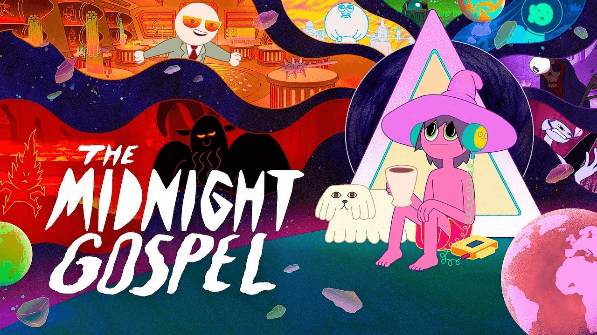

About Clancy
Clancy is the protagonist of a new Netflix series called The Midnight Gospel. In this series, Clancy travels through several mutiverses interviewing other beings about life's darkest points, for his spacecast.
Clancy and his friends
Clancy's Characteristics
- He has a giant hat
- He has pink-ish skin
- He has big green eyes
Clancy's Friends
The people Clancy interviews usually end up befriending him. Clancy's bestfriend is his small white dog/vacuum cleaner. Click on the links bellow to read more about them.